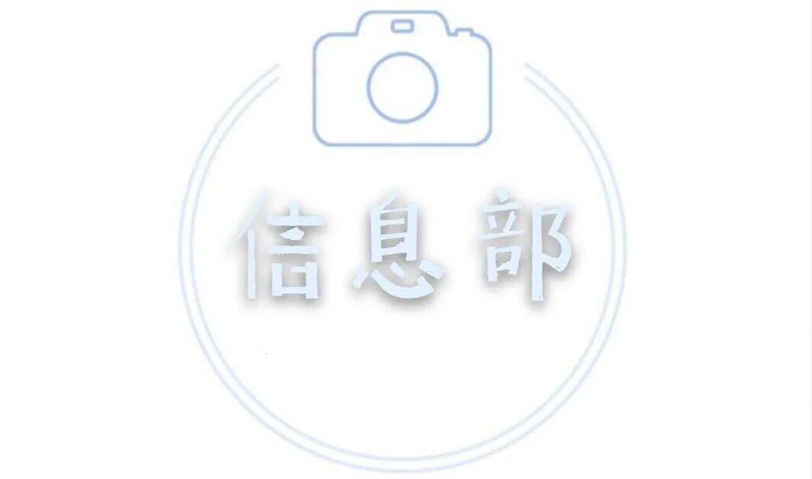
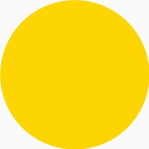

信息部——宣传我最行



什么是信息部呢？
信息部是电协行政部当中的技术部门 。


信息部平时的工作是什么呢？
1.日常活动及宣传工作的微信和微博平台推送，QQ空间运营和活动多媒体维护工作。
2.宣传展板的绘画，宣传单和宣传海报的设计,还有活动宣传的策划。
3.制作活动宣传视频，整理比赛视频以及日常活动的摄影工作。


信息部的成员
18的学姐
李亭熹
大家好，我是李亭熹，来自信息科学与工程学院，在信息部工作的这两年里收获良多，希望大家在电协也可以收获更多自己想要的♡
杜遇涵
大三学姐一枚 对生活充满热爱 希望大家在电协收获多多
19的学长和学姐
辛学敏
我是辛学敏，很幸运在大一选择了电协信息部。这一年里我学到了很多、认识了很多志同道合的伙伴，也希望大家在电协都能有所收获。
张煚
大家好我叫张煚(jiong)目前是一九级电协信息部成员
杨中行
好开心加入信息部，希望我们电协越来越好，大家冲冲冲
20的小白
牛星月
我是20级网络工程的牛星月，很荣幸加入电协信息部。在这里我认识了很多和我志同道合的朋友，同时也学到了很多技能。希望在未来的四年里能和大家共同进步。
苗力文
hey大家好 我是来自物联网工程的著名奶茶鉴定家苗力文 很高兴能在信息部与大家相聚。我们每一个人，都由无数个十万分之一的幸存粒子组成，散落在数十亿的人海。所以我和你相遇，是无数个微小粒子前赴后继、湮灭碰撞，创造出来的奇迹。珍贵又难得
王聚宝
王聚宝，河北石家庄人，平时爱好看看动漫，刷刷小视频，看看书，喜欢的运动是羽毛球，希望在接下来的日子里交交朋友，好好学习。
李现亮
我叫李现亮，来自山东省日照市，一个美丽的沿海城市，我喜欢读书，长跑。喜欢历史，爱看《平凡的世界》，《明朝那些事》。来到沈阳理工大学后，有幸加入电协这个大家庭，并在其中学习，成长，收获颇多，希望能和大家一起学习进步。
孙瑛桀
大家好，我叫孙瑛桀，来自自动化与电气工程学院，是一名大一小学生，酷爱篮球和游戏，希望在电协信息部学到更多的东西，和大家和睦相处。
刘洪溥
电子科学与技术专业的，爱好吃，很高兴来到本部门，愿我们相处更好
杜岑
大家好，我是来自测控技术与仪器的杜岑，是一枚电协信息部的新人，很高兴能加入电协信息部的大家庭。
王海彬
Hello，大家好我是来自信息院电子信息科学与技术的王海彬，很高兴在大一加入信息部，希望能在信息部里与大家互相学习，共同进步！！
排版|王海彬
图片|信息部
快来关注我们

了解更多电协资讯